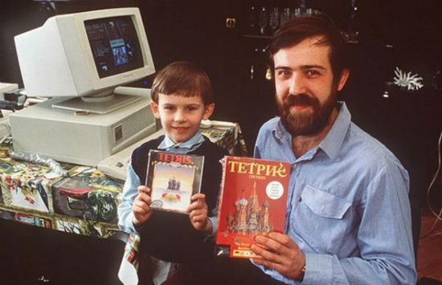

The original game of Tetris was developed in 1984 by Alexey Pajitnov, an artificial intelligence researcher at Moscow's Acadamy of Sciences. Pajitnov would create games to test the strength of new computer hardware. He'd then circulate the games amongst his colleagues. Tetris, a game of stacking configurations of 4 blocks called tetriminoes, was the most popular of these games. It journeyed beyond Moscow and over the Iron Curtain, finding its way to America and eventually my family's first computer in the 90s.
I have a lot of memories playing Tetris growing up. It was always so pleasing just to stack blocks. That's why I wanted to have a go at making my own version of this game: Tetris 2.022. I hope you'll find it fun.
Here is a photo of Alexey Pajitnov back when the game was created:

The Original Theme song, which I provide in the game, is inspired by an old Russian folksong dating back to 1861 called "Korobeiniki" about a traveling peddlar who likes to seduce women.